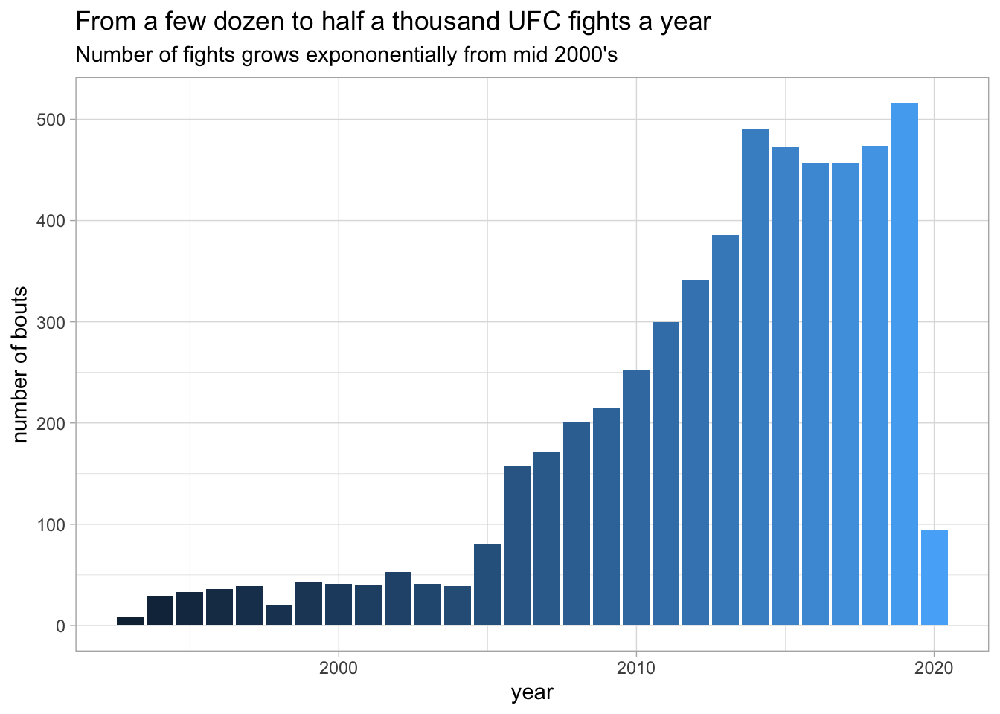
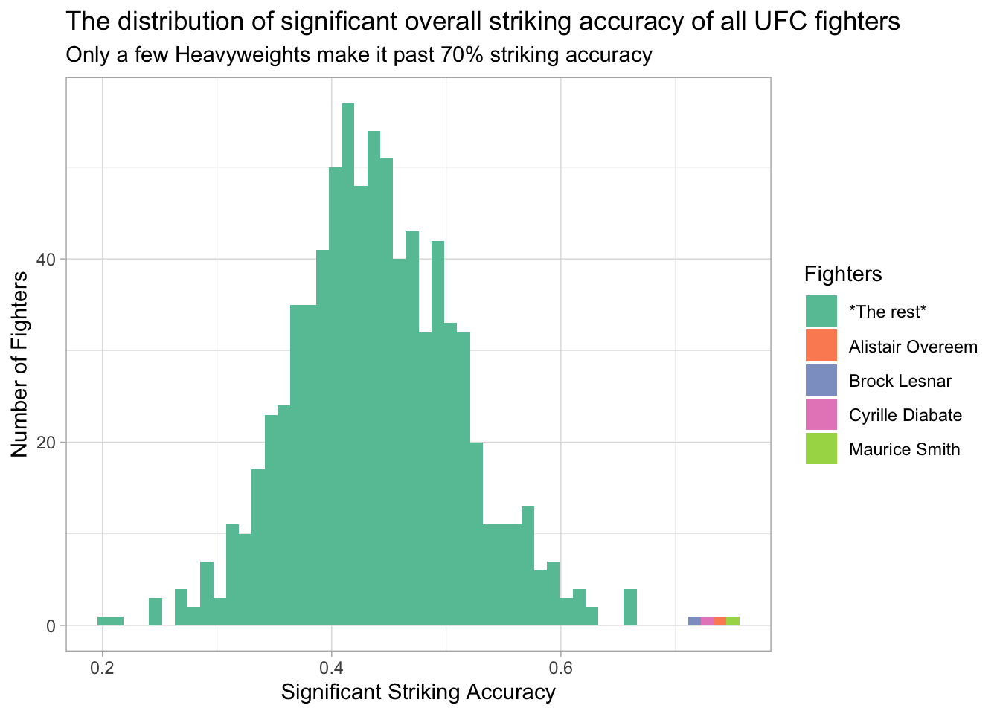
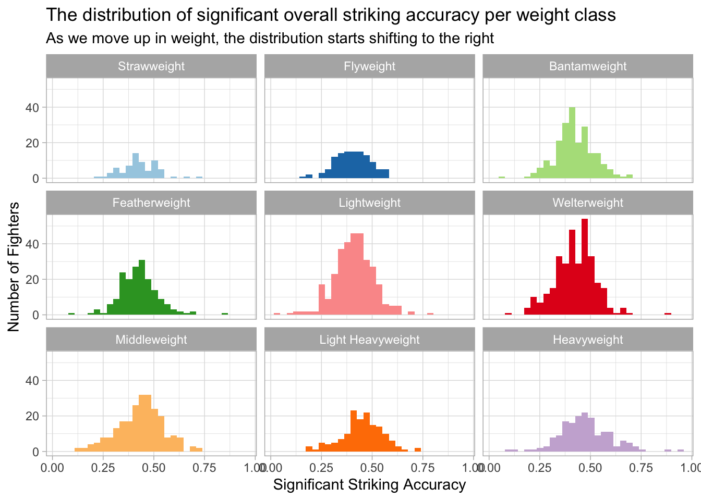
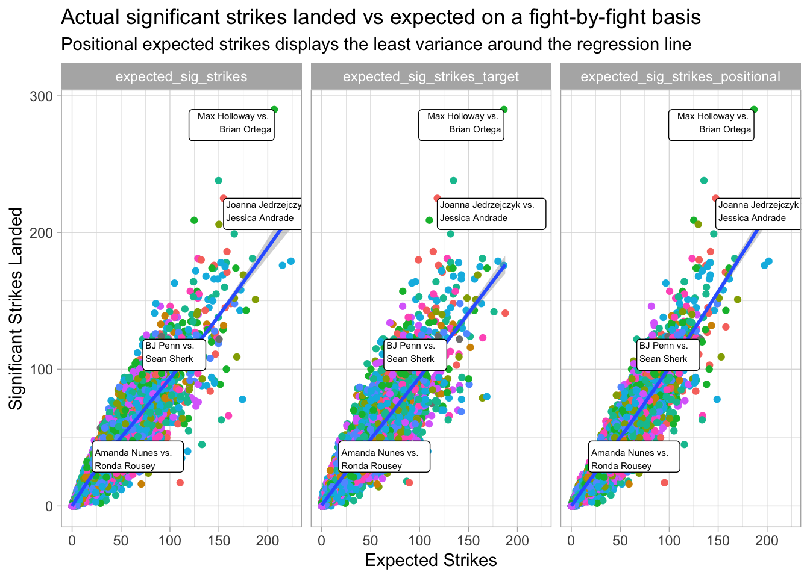
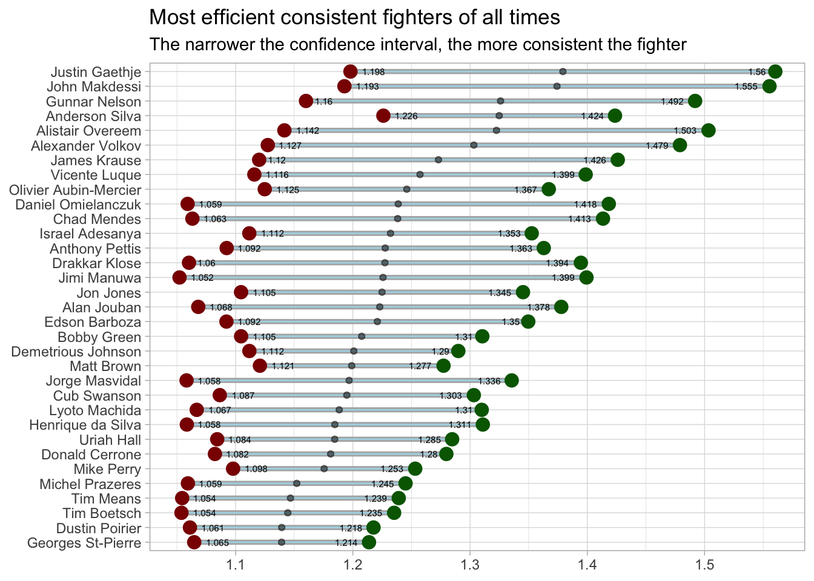

Tamas Szilagyi


The first UFC event was held over a quarter century ago on November 12th 1993 in Denver, CO. The concept was to pit different martial arts and fighting styles against each other to see which one is truly superior. The event was the brainchild of Rorion Gracie, member of the legendary Brazilian jiu-jitsu (BJJ) family. In the late eighties and early nineties Rorion produced and appeared on several VHS tapes demonstrating the power of jiu jitsu over judo, karate, sambo and other martial arts. Why not make a live event out of it, he figured.
Rorion believed that no martial art was more effective than BJJ, and no martial artist more lethal than a Gracie. The first event proved his point, when his brother Royce Gracie defeated Gerard Gordeau with a rear naked choke and won UFC 1. Only meant to be a one-time spectacle, the televised event was deemed popular enough to be followed up with a next event. Fast forward to 2020, and UFC is broadcasted on ESPN practically every weekend, mind the hopefully temporal hiatus due to the pandemic.

What makes mixed martial arts fascinating is its unpredictality. There is no blueprint for success in the octagon. A karate fighter can headkick a judoka to sleep, a thai boxer’s leg kicks can ruin the explosive movement of a wrestler, or similarly an aggressive grappler can wear down a KO specialist. You need to be skilled at every aspect of fighting in order to be able to survive at the nosebleeds of the sports.
However, MMA statistics still haven’t been as extensively studied as other sports, even though the data itself is quite interesting and unlike what traditional sport analytics is occupied with. The ufc.stats package intends to help fill this void and make up-to-date UFC fight statistics available to the R community. My hope is that this package will inspire R users and UFC fans alike to push MMA analytics forward.
It’s 2020 & It’s time for improvement
— Cub Swanson (@CubSwanson) January 14, 2020
-Better MMA gloves
-MMA based scoring system
-More weight classes
-More stats & analytics
This sport can still improve #KillerCub2020
The data.frame contained in this package ufc_stats is in essence the same as the fight statistics available on the official UFC Stats website, albeit organized as a tidy data.frame. The UFC’s system for recording fight level data is based on the original FightMetric sytem. Each row of ufc_stats represents the statistics of one fighter in a single round of a fight. The data.frame contains 37 variables in total. For full a description of each variable, please refer to the Data Dictionary.
This first blog post will introduce the data model of UFC statistics, with a particular focus on striking. We’ll briefly cover the basic metrics, then attempt to come up with a calculated metric to compare fighter’s striking ability regardless of weight class.
All fights start with the fighters on their feet. Standup fights are characterized by strikes, a catch-all term for punches, kicks and elbows. The FightMetric system that underlies UFC’s data model distingusihes between total versus significant strikes, a difference that can seem confusing at first.
Strikes are recorded along three axes:
Contrary to what many may think, significant strikes are not synonimous with power strikes. In a standup fight, jabs and short leg kicks count just as well toward it. Or to flip it around: all punches and kicks are significant strikes except short strikes in the clinch or on the ground. In the above chart the red pyramids at the bottom are the strikes that are counted as significant.
One of the most common ways to evaluate a fighter is his or her significant striking accuracy. This statistic is included on a per round basis in the dataset. Let’s take a quick glance at the the distribution of overall striking accuracy, before we start coming up with our own metric.

Striking accuracy resembles a normal distribution with the average fighter landing around 40% of their punches. With only heavyweights in the top spots for this metric, one starts to wonder whether it would make more sense to compare fighters to their peers in the same weight class instead.

Heavyer fighters tend to have a lower pace and less agility than the lighter fighters, which might contribute to the slight shift to the right in striking accuracy when moving up in weight.
One way to deal with differences between weight divisions is to to compare the strikes a fighter lands to the amount that is expected. But how do we get the expected number of strikes? First, we calculate the average accuracy for each weight class. Then we multiply this by the number of strikes attempted on by a fighter in a particular fight. This number is in essence the number of significant strikes that would have landed, were they attempted by an average fighter of the respective weight class. What this allows us to do, is to see which fighters exceed or subceed expected strikes, placing them above or below the weight division average.
We can further break down the calculation into either positional (distance, clinch or ground) or target based (head, body or leg) averages, and multiply them by the matching attempts, to get a more accurate estimate of expected strikes. We can visualize the correlation between the two by plotting the expected versus the actual strikes landed by each fighter per fight.
To illustrate how this metric behaves, I am going highlight four fights where the winner surpassed expected strikes by a large margin.

Plotting the three different flavors of expected significant strikes, the positional version seems the most consistent, as it over- or under-estimates the number of significant strikes the least. Note that a fighter doesn’t per se need to top this chart along the y-axis - this is rather typical for volume strikers, instead what matters is the distance to the left of the regression line.
Quantifying by how much a fighter under- or over performs the expected strikes per fight means we can rank fighters irrespective of weight division. This type of metric is often called efficiency in other sports, and an efficiency score of 1.1 would indicate that a fighter out strikes expectations by 10% on average. We can also add a confidence interval around the efficiency scores to see how fighters performed over the span of their UFC careers; and plot them in descending order with some constraints on said interval to exclude inconsistent fighters.

What’s cool about this plot is that besides ranking fighters according to their average efficiency, we also get a measure of how consistently the fighter has performed. Looking at the plot from both angles, Anderson Silva’s numbers immediately jump out. Not only is he the 4th most efficient striker of all times, in his prime 95% of fights would likely finish with him having achieved over 1.22 efficiency. This is incredible. What’s also telling is that the top spots are all filled by currently active fighters, a sure sign that there has never been a better time for Mixed Martian Arts. The UFC roster is packed with talent right now as far as the I can see.
It is important to note that this metric is by no means perfect or captures striking ability to its fullest. For one, most knockout artists will have a hard time delivering good numbers for this metric. Their strength is in power, not always accuracy. Similarly, you can be the most efficient striker in the world, if you get caught with the perfect shot, your hard earned fight stats won’t be worth a dime. And this is the beauty of the fight game, anything can happen to anyone at any time.
This post originally appeared as a vignette from the ufc.stats package, and is available at https://tamaszilagyi.com/ufc.stats/articles/2020-04-15-striking.html/
Kun, Reed, and Crigger, Kelly. Fightnomics. Graybeard Publising, 2013.↩